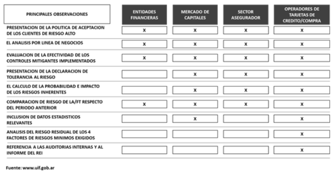

Notas y Artículos
Andrés Kores | Esta columna analiza el feedback difundido por la UIF en el documento denominado "Formación UIF 2022 – Análisis de los Informes Técnicos de Autoevaluaciones de Riesgos de los Sujetos Obligados", emitido como resultado de las Jornadas de Retroalimentación sobre Autoevaluaciones de Riesgos llevadas a cabo por dicha Unidad durante los meses de mayo, junio y julio de 2022. | 15/11/2022
I. ¿EN QUE CONSISTIÓ EL FEEDBACK DIFUNDIDO POR EL REGULADOR?
La Unidad de Información Financiera (UIF), durante los meses de mayo, junio y julio del presente año realizó las "Jornadas de Retroalimentación sobre Autoevaluaciones de Riesgos", con los Sujetos Obligados de los sectores financiero, mercado de capitales, sector seguros y sector de tarjetas de crédito o compra.
Dichas sesiones tuvieron como objetivo perfeccionar los Informes Técnicos del Oficial de Cumplimiento y las Matrices de Autoevaluación de Riesgos de LA/FT de dichos sectores de la economía.
En ese sentido, se analizaron las principales falencias identificadas por el regulador para cada grupo de Sujetos Obligados, así como las buenas prácticas para su confección y las principales recomendaciones para su actualización y regularización.
Recientemente, el regulador ha publicado en su página web el documento denominado "Formación UIF 2022 – Análisis de los Informes Técnicos de Autoevaluaciones de Riesgos de los Sujetos Obligados", el cual puede descargarse en el siguiente link: Análisis de los Informes Técnicos de Autoevaluaciones de Riesgos de los Sujetos Obligados.
II. ¿CUÁLES FUERON LAS PRINCIPALES OBSERVACIONES?
A continuación, se exponen las principales observaciones derivadas del análisis estadístico de los Informes Técnicos de Autoevaluación de Riesgos del año 2021 y expuestas en el documento mencionado en el acápite precedente:
Asimismo, en dicho documento el regulador menciona otras falencias adicionales y enuncia un conjunto de buenas prácticas para mejorar la elaboración de las Matrices de Autoevaluaciones de Riesgos de LA/FT, las cuales se recomienda su lectura.
III. ¿SE DEBE ACTUALIZAR LA METODOLOGIA DE AUTOEVALUACION DE RIESGOS DE LA/FT ALINEADA A DICHO FEEDBACK?
La Metodología de Autoevaluación de Riesgos de LA/FT debe contemplar, entre otros aspectos, el análisis de los factores de riesgo a ser aplicados, realizar una descripción de los requerimientos normativos y/o estándares internacionales asociados a los mismos, exponer el nivel de riesgo inherente asignado a cada factor de riesgo determinado, evaluar la situación actual del Sujeto Obligado en cada uno de los factores de riesgo, evaluar la efectividad de los controles y/o mitigantes aplicados, determinar el nivel de riesgo residual de cada uno de los factores de riesgo, así como un nivel de riesgo residual general o global del Sujeto Obligado, exponiéndolo en forma comparativa con el período inmediato anterior.
La matriz de Autoevaluación de Riesgos de LA/FT es una herramienta dinámica, por lo cual debe nutrirse, asimismo, de los lineamientos y buenas prácticas difundidos por el regulador.
En ese sentido debería adecuarse la metodología de autoevaluación de riesgos de LA/FT de acuerdo con el feedback suministrado formalmente por el regulador, lo cual contribuirá a disponer de una herramienta de gestión de riesgos más adecuada y actualizada para la toma de decisiones, asistir a la Dirección y la Gerencia en el efectivo manejo del riesgo de LA/FT y en el desarrollo de los controles internos, y evitar potenciales observaciones del supervisor primario y del regulador durante los futuros procesos de inspección.
IV. ¿CUÁNDO SON LOS VENCIMIENTOS EN 2023?
En el próximo año 2023 se producirá una nueva ronda de presentación de los Informes Técnicos de los Oficiales de Cumplimiento y de las Matrices de Autoevaluación de Riesgos a la UIF, correspondientes a los sujetos obligados nominados por el regulador para cumplir con dicha responsabilidad.
En el siguiente cuadro se exponen las fechas de vencimiento de la presentación del Informe Técnico del Oficial de Cumplimiento y de la Matriz de Autoevaluación de Riesgos a la UIF:
| Sujeto Obligado | Fecha de presentación a la UIF | Resolución UIF |
|---|---|---|
| Entidad Bancaria Entidad Cambiaria (excepto presentaciones bienales) | 30.04 | 30-E/2017 |
|
Sector Seguros - aquellos que comercializan seguros de vida con ahorro y retiro Sector Seguros – resto (excepto presentaciones bienales para aquellos que comercializan seguros patrimoniales) |
31.05 | 28/2018 |
|
Mercado de Capitales
Mercado de Capitales – Agentes de Negociación (excepto presentaciones bienales para aquellos que no reciban ni dispongan de dinero o valores negociables de terceros) |
30.04 | 21/2018 |
| Agregadores, Agrupadores o Facilitadores de Pagos | 30.04 | 76/2019 |
| Sujetos Obligados que comenzaron a operar en 2022 | 30.04
31.05 |
Según cada normativa |
A efectos de la presentación a la UIF, y ante la inexistencia hasta la fecha de un régimen informativo electrónico, esta presentación se continuará efectuando por correo electrónico a dicho Organismo. Recordamos que, de acuerdo con la normativa de cada Sujeto Obligado, el Directorio de la Entidad debe aprobar previamente a su envío: (1) la metodología de Autoevaluación de Riesgos, (2) el Informe Técnico del Oficial de Cumplimiento y (3) la propia matriz de autoevaluación de riesgos, (4) la Declaración de tolerancia al riesgo y (5) el Plan de mitigación de riesgos, en caso de existir. Este último podría ser tratado por el Directorio en forma ulterior.
V. COROLARIO
En una nota anterior de mi autoría, publicada con fecha 23.12.2019 en este portal (Opinión y Noticias, Autoevauación de Riesgos de LA/FT 2020), manifestaba la necesidad de contar con un documento formal emitido por el regulador, que contenga el feedback sobre el diagnóstico de la revisión de los Informes Técnicos de los Oficiales de Cumplimiento y de las Matrices de Autoevaluación de Riesgos de LA/FT presentadas por los Sujetos Obligados.
En ese sentido, celebro la iniciativa de la UIF descripta precedentemente y considero que es una oportunidad que beneficia a los Sujetos Obligados, dado que la implementación de estas recomendaciones y el enriquecimiento de la metodología de identificación y evaluación de riesgos de LA/FT, elevan la calidad de esta herramienta de gestión de riesgos, contribuyendo a alcanzar un Sistema de Prevención LA/FT más robusto y alineado al enfoque de riesgos.
Mg. Andres Kores Socio de FIDESnet